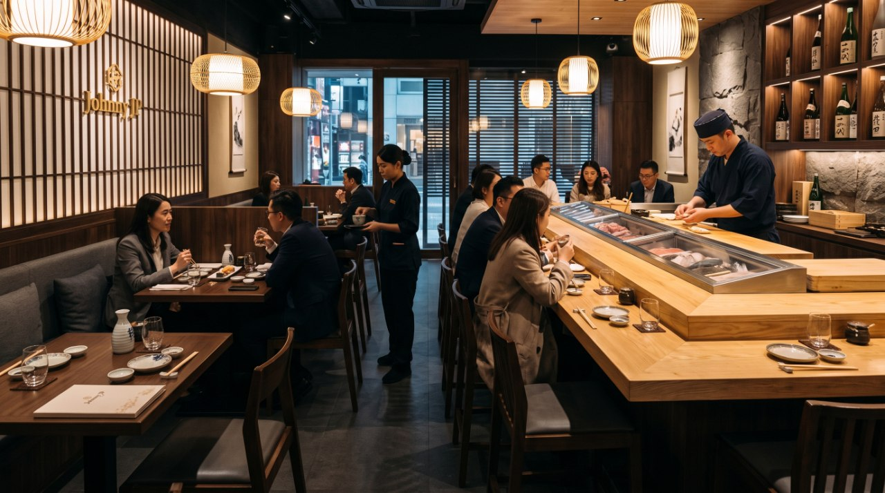
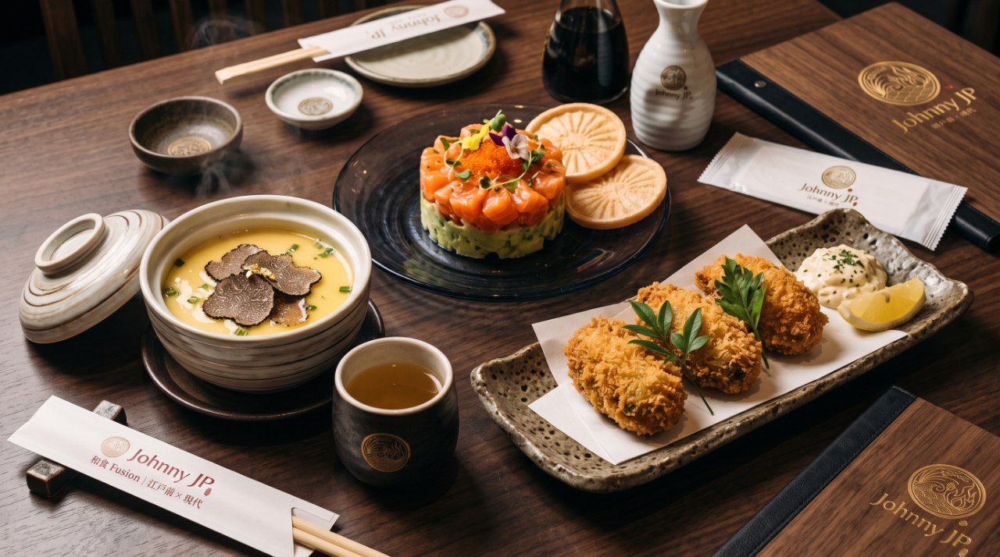
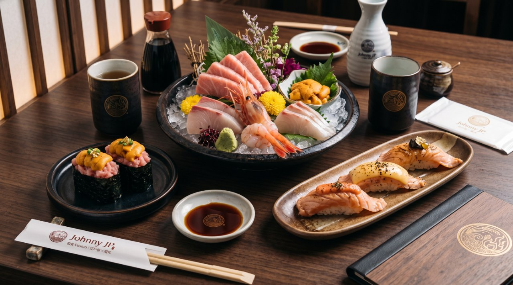
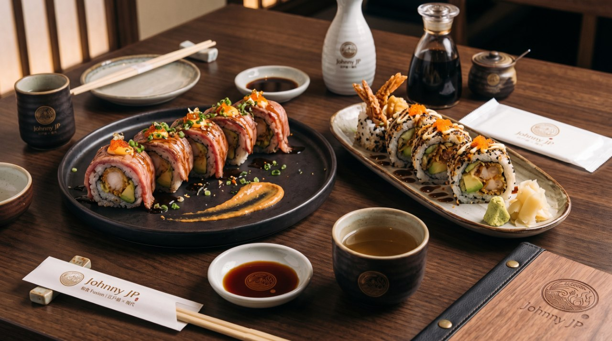
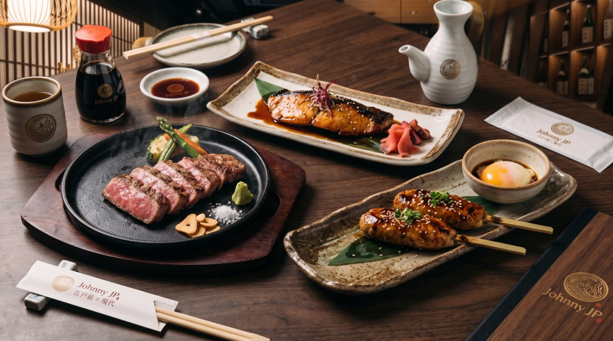
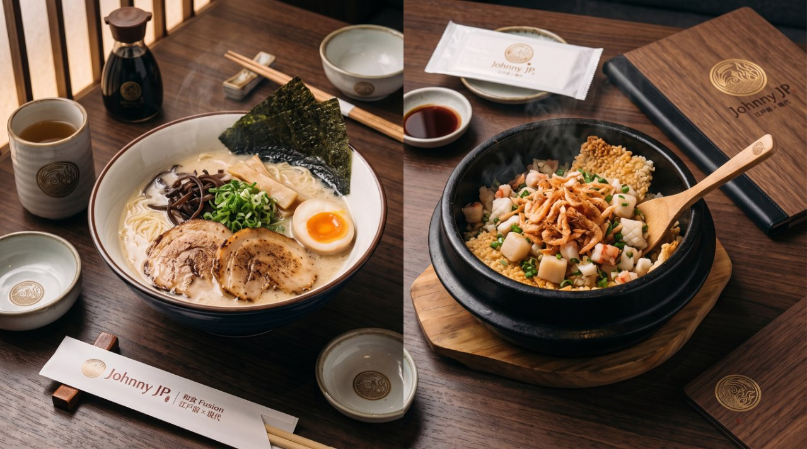
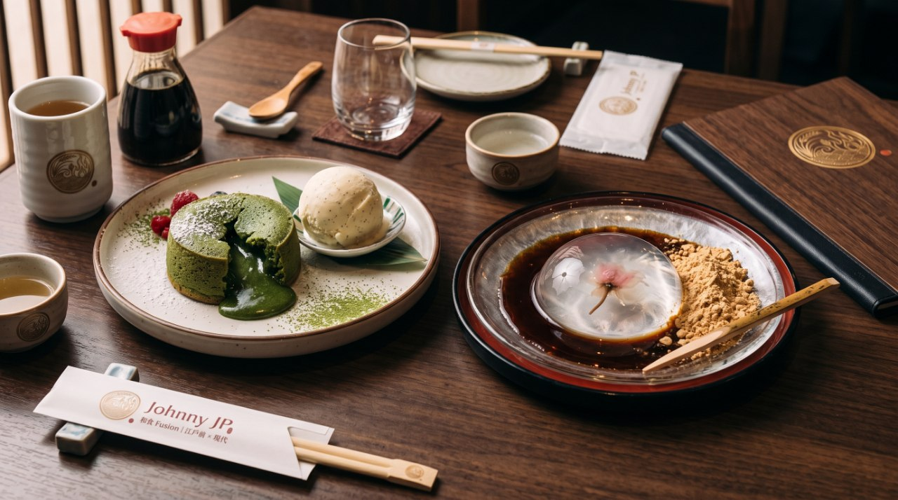

匠心傳承,融合創新
匠の心 × 融合
我們堅持嚴選每日由日本空運到港的頂級時令漁獲,並結合當造的本地及環球有機食材。
和食 Fusion · Edomae × Modern
江戶前手藝 × 現代融合料理
香港中環 · 威靈頓街 123 號 JP 大廈地下 2 號舖
關於 SunSun JP
SunSun JP 是一間揉合傳統江戶前手藝與現代西日融合風格 (Washoku Fusion) 的高質感日式餐廳。
店內裝潢採用沉穩的木質調與和風簡約設計,搭配柔和的暖光,營造出寧靜且舒適的用餐氛圍。 無論是商務聚餐、情侶約會還是與好友小聚,SunSun JP 都能為您帶來兼具視覺與味覺的極致饗宴。

品牌與料理理念
三個信念,成就每一道端上桌的料理。
匠の心 × 融合
我們堅持嚴選每日由日本空運到港的頂級時令漁獲,並結合當造的本地及環球有機食材。
季節限定 · Seasonal
料理長秉持「不時不食」的日本料理核心精神,根據季節更迭推出限定菜單,務求讓食客品嚐到食材最鮮甜、最完美的本味。
おもてなし · Omotenashi
我們重視每一位客人的用餐體驗,從熱情周到的服務到細緻入微的擺盤,都力求傳遞出誠摯的日式待客之道。
招牌菜式
由前菜、刺身壽司、創作卷物、炭火燒物,到麵主食與甜品 — 每類均有招牌之作。

Appetizers
Sashimi & Sushi
Rolls & Fusion
Robata Grills
Noodles & Rice
Desserts店內環境
和風簡約的空間設計,吧檯直視 chef 發辦過程,讓用餐成為一場沉浸式體驗。
營業時間
* 座位滿額時可能需要稍候;節日期間時段如有調整,請先電話查詢。
WhatsApp 訂座專線+852 9876 5432(全日接受訂座)
立即訂座地址與聯絡
威靈頓街 123 號
JP 大廈地下 2 號舖
Shop 2, G/F, JP Building, 123 Wellington Street, Central, Hong Kong
港鐵中環站 C 出口,沿港灣道步行約 5 分鐘;巴士 5、7、75、101、102 等可於「威靈頓街」停下即達。
在 Google Maps 開啟